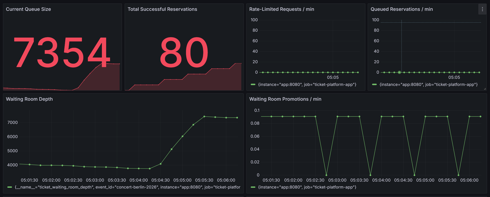

Backend / Scalability
TicketSystem – Lastfähige Reservierungsplattform
Kotlin, Ktor, PostgreSQL, Prometheus, Grafana, k6
Architekturkonzept für eine reservierungsnahe Plattform unter hoher Last. Der Fokus lag auf Backpressure statt Failures, konsistentem Locking, idempotenten Requests, Sync-/Async-Trennung und Observability-first, um Race Conditions, Datenbank-Bottlenecks und Lastspitzen kontrolliert zu verarbeiten.